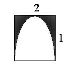

Q. Determine which of the two expressions below is larger, whether they are equal, or whether there is not enough information to decide.
The semicircle is inscribed in the rectangle shown above.
Column A
The percent of the rectangle that is shaded
Column B
25%
Solution: Since
we are not given the dimensions of the rectangle nor the semicircle, the
solution must be independent of their dimensions. Let’s choose the
radius of the semicircle to be 1 (this is an easy number to calculate with). Then
the width of the rectangle is 1 and its length is 2:

Now, the area of the rectangle is (length)(width) = 2 × 1 = 2. And the area
of the semicircle is
=
=
. So the area of the shaded region is 2 −
. Calculating the
percent of the rectangle that is shaded yields
=
=
=
=
<
=
= 25%
Hence, Column B is larger, and the answer is
(B).